8. Versión 4: cliente/servidor en una arquitectura de servicios web
En esta nueva versión, la aplicación [Pam] se ejecutará en modo cliente/servidor en una arquitectura de servicios web. Repasemos la arquitectura de la aplicación anterior:
 |
En el ejemplo anterior, una capa de comunicación [C, RMI, S] permitía una comunicación transparente entre el cliente [ui] y la capa remota [metier]. Vamos a utilizar una arquitectura similar, en la que la capa de comunicación [C, RMI, S] se sustituirá por una capa [C, HTTP / SOAP, S]:
 |
El protocolo HTTP / SOAP tiene la ventaja, respecto al protocolo anterior RMI / EJB, de ser multiplataforma. De este modo, el servicio web puede escribirse en Java e implementarse en el servidor Glassfish, mientras que el cliente podría ser un cliente .NET o PHP.
Vamos a desarrollar esta arquitectura según tres modos diferentes:
- el servicio web estará a cargo de EJB [Metier]
- el servicio web lo prestará una aplicación web que utilice EJB y [Metier]
- el servicio web estará a cargo de una aplicación web que utilice Spring
Un servicio web puede implementarse de diversas formas en un servidor Java EE:
- mediante una clase anotada con @WebService que se ejecuta en un contenedor web
 |
- mediante un EJB anotado con @WebService que se ejecuta en un contenedor EJB
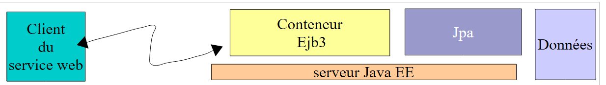 |
Comenzamos con esta última arquitectura.
8.1. Servicio web implementado por un EJB
8.1.1. La parte del servidor
8.1.1.1. El proyecto NetBeans
Empecemos por crear un nuevo proyecto Maven, copia del proyecto EJB [mv-pam-ejb-metier-dao-jpa-eclipselink]:
 |
Con la siguiente arquitectura:
 |
la capa [metier] será el servicio web al que accederá la capa [ui]. Esta clase no necesita implementar ninguna interfaz. Son las anotaciones las que transforman un POJO (objeto Java ordinario) en un servicio web. La clase [Metier], que implementa la capa [metier] anterior, se transforma de la siguiente manera:
package metier;
...
@WebService
@Stateless()
@TransactionAttribute(TransactionAttributeType.REQUIRED)
public class Metier implements IMetierLocal,IMetierRemote {
// referencias sobre las capas [DAO]
@EJB
private ICotisationDaoLocal cotisationDao = null;
@EJB
private IEmployeDaoLocal employeDao=null;
@EJB
private IIndemniteDaoLocal indemniteDao=null;
// obtener la nómina
@WebMethod
public FeuilleSalaire calculerFeuilleSalaire(String SS,
...
}
// lista de empleados
@WebMethod
public List<Employe> findAllEmployes() {
...
}
// Importante: no hay métodos getter ni setter para los EJB
}
- En la línea 4, la anotación @WebService convierte la clase [Metier] en un servicio web. Un servicio web expone métodos a sus clientes. Estos deben estar anotados con el atributo @WebMethod.
- Líneas 19 y 25: los dos métodos de la clase [Metier] se convierten en métodos del servicio web.
- Línea 29: es importante que se eliminen los métodos getter y setter; de lo contrario, quedarán expuestos en el servicio web y esto provocará errores de seguridad.
NetBeans detecta la incorporación de estas anotaciones y, a continuación, modifica la naturaleza del proyecto:
 |
En [1], ha aparecido una estructura de árbol [Web Services] en el proyecto. En ella se encuentra el servicio web Metier y sus dos métodos. La aplicación de servidor se puede implementar en [2]. El servidor MySQL debe estar en ejecución y su base de datos [dbpam_eclipselink] debe existir y estar completa. Puede que sea necesario eliminar previamente [3] y EJB del proyecto cliente/servidor EJB analizado anteriormente para evitar conflictos de nombres. De hecho, nuestro nuevo proyecto incluye los mismos EJB que los del proyecto anterior.
 |
En [1], vemos nuestra aplicación serveur desplegada en el servidor Glassfish. Una vez desplegado el servicio web, se puede probar:
 |
- En [1], dentro del proyecto actual, probamos el servicio web [Metier]
- Se puede acceder al servicio web a través de diferentes URL. El URL [2] permite probar el servicio web
- en [3], un enlace al archivo XML que define el servicio web. Los clientes del servicio web necesitan conocer el URL de este archivo. A partir de él se genera la capa de cliente (stubs) del servicio web.
- En [4,5], un formulario que permite probar los métodos expuestos por el servicio web. Estos se presentan con sus parámetros, que el usuario puede definir.
Por ejemplo, probemos el método [findAllEmployes], que no necesita ningún parámetro:
 |
En el ejemplo anterior, probamos el método. A continuación, recibimos la respuesta que se muestra a continuación (vista parcial). En ella aparecen los dos empleados con sus indemnizaciones. Se invita al lector a probar de la misma manera el método [4], pasándole los tres parámetros que requiere.

8.1.2. La parte del cliente
 |
8.1.2.1. El proyecto NetBeans del cliente « » (consola)
Ahora creamos un proyecto Java de tipo [Java Application] para la parte client de la aplicación. No ha sido posible (junio de 2012) crear un proyecto Maven para este cliente. Se produce un error, que parece conocido en Internet, pero que sigue sin resolverse.
 |  |
Una vez creado el proyecto, indicamos que será cliente del servicio web que acabamos de implementar en el servidor Glassfish:
 |
- En [2], seleccionamos el nuevo proyecto y pulsamos el botón [New File]
- en [3], indicamos que queremos crear un cliente de servicio web
 |
- con [4], vamos a designar el proyecto NetBeans del servicio web
- en la ventana [5] aparecen todos los proyectos que tienen una rama [Web Services]; aquí, únicamente el proyecto [mv-pam-ws-metier-dao-eclipselink].
- Un proyecto puede implementar varios servicios web. En [6], seleccionamos el servicio web al que queremos conectarnos.
 |
- En [7] se muestra la definición del servicio web URL. Esta URL es utilizada por las herramientas de software que generan la capa de cliente que se conectará con el servicio web.
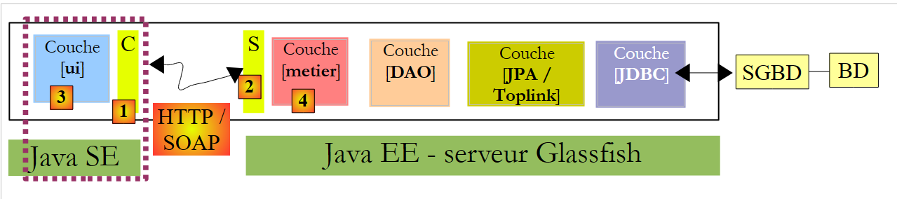 |
- La capa de cliente [C] [1] que se va a generar está formada por un conjunto de clases Java que se incluirán en un mismo paquete. El nombre de este se establece en [8].
- Una vez finalizado el asistente de creación del cliente del servicio web pulsando el botón [Finish], se crea la capa [C] mencionada anteriormente.
Esto se refleja en una serie de cambios en el proyecto:
- En [10], mencionado anteriormente, aparece una estructura de árbol [Generated Sources] que contiene las clases de la capa [C], las cuales permiten al cliente [3] comunicarse con el servicio web. Esta capa permite al cliente [3] comunicarse con la capa [metier] y [4] como si fuera local y no remota.
- En [11] aparece un árbol [Web Service References] que enumera los servicios web para los que se ha generado una capa de cliente.
Cabe señalar que en la capa [C] [10] generada, encontramos clases que se han implementado en el lado del servidor: Indemnite, Cotisation, Employe, FeuilleSalaire, ElementsSalaire, Metier. Metier es el servicio web y las demás clases son necesarias para dicho servicio. Quizá nos despierte la curiosidad por consultar su código. Veremos que la definición de las clases que, al ser instanciadas, representan objetos manipulados por el servicio, consiste en la definición de los campos de la clase y sus accesores, así como en la incorporación de anotaciones que permiten la serialización de la clase en un flujo XML. La clase «Metier» se ha convertido en una interfaz que contiene los dos métodos que han sido anotados con @WebMethod. Cada uno de ellos da lugar a dos clases, por ejemplo, [CalculerFeuilleSalaire.java] y [CalculerFeuilleSalaireResponse.java], donde una encapsula la llamada al método y la otra, su resultado. Por último, la clase MetierService es la que permite al cliente disponer de una referencia al servicio web de negocio remoto:
El método getMetierPort de la línea 2 permite obtener una referencia al servicio web Metier remoto.
8.1.2.2. El cliente de consola del servicio web Metier
Ahora solo nos queda escribir el cliente del servicio web Metier. Copiamos la clase [MainRemote] del proyecto [mv-pam-client-metier-dao-jpa-eclipselink] —que era un cliente de un servidor EJB— al nuevo proyecto.
 |
- en [1], la clase del cliente del servicio web. La clase [MainRemote] presenta errores. Para corregirlos, comenzaremos por eliminar todas las instrucciones [import] existentes en la clase y las volveremos a generar mediante la opción [Fix Imports]. De hecho, algunas de las clases utilizadas por la clase [MainRemote] ahora forman parte del paquete [client] generado.
- En [3], el fragmento de código en el que se instancia la capa [metier] es [3]. Esto se hace mediante el código JNDI para obtener una referencia a un EJB remoto.
Modificamos el código de la siguiente manera:
- se elimina el código JNDI
- dado que la clase [PamException] no existe en el lado del cliente, eliminamos el catch asociado para conservar únicamente el catch en la clase padre [Exception].
 |
- en [4], nos queda por obtener una referencia al servicio web remoto [Metier] para poder llamar a su método [calculerFeuilleSalaire].
- En [5], con el ratón, arrastramos (drag) el método [calculerFeuilleSalaire] del servicio web [Metier] para soltarlo (drop) en [4]. Se genera el código [6]. Este código genérico puede ser adaptado posteriormente por el desarrollador.
 |
- En la línea 112, vemos que [calculerFeuilleSalaire] es un método de la clase [client.Metier] (línea 111). Ahora que sabemos cómo obtener la capa [metier], el código anterior se puede reescribir de la siguiente manera:
La línea 7 obtiene una referencia al servicio web Metier. Una vez hecho esto, el código de la clase no cambia, salvo que, en la línea 10, no se gestiona la excepción de tipo [Exception], sino el tipo más general Throwable, la clase padre de la clase Exception. Si se produce una excepción, mostramos todas las causas anidadas de la misma hasta llegar a la causa original.
Ya estamos listos para las pruebas:
- asegurarnos de que se inicia SGBD MySQL5, que se crea e inicializa la base de datos dbpam_eclipselink
- asegurarse de que el servicio web está implementado en el servidor Glassfish
- compilar el cliente (Clean and Build)
- configurar la ejecución del cliente
 |
- Ejecutar el cliente
Los resultados en la consola son los siguientes:
Con la siguiente configuración:
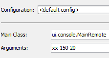
se obtienen los siguientes resultados:
Cabe señalar que, aunque el servicio web [Metier] envía una excepción de tipo [PamException], la excepción recibida por el cliente es de tipo [SOAPFaultException]. Ni siquiera en la cadena de excepciones aparece el tipo [PamException].
8.1.3. El cliente Swing del servicio web Metier
Tarea pendiente: trasladar el cliente Swing del proyecto [mv-pam-client-ejb-metier-dao-jpa-eclipselink] al nuevo proyecto para que también sea cliente del servicio web desplegado en el servidor Glassfish.
8.2. Servicio web implementado por una aplicación web
Nos situamos ahora en el contexto de la siguiente arquitectura:
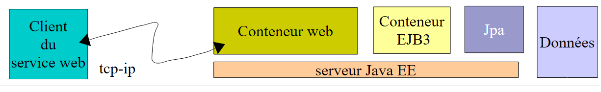 |
El servicio web lo proporciona una aplicación web que se ejecuta en el contenedor web del servidor Glassfish. Este servicio web se basará en el EJB [Metier], que a su vez se ha desplegado en el contenedor EJB3.
8.2.1. La parte del servidor
Creamos una aplicación web:
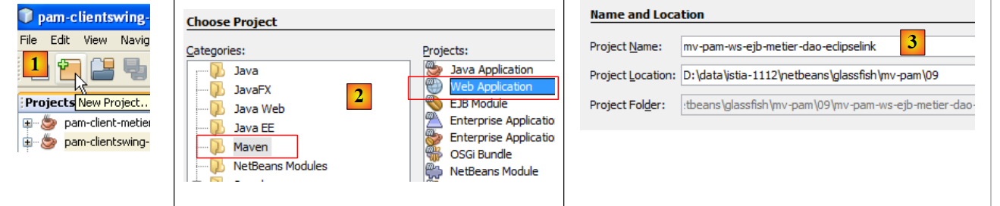 |
- en [1], creamos un nuevo proyecto
- en [2]; este proyecto es de tipo [Web Application]
- en [3], le damos el nombre de [mv-pam-ws-ejb-metier-dao-eclipselink]
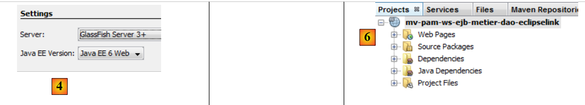 |
- en [4], elegimos la versión Java EE 6
- en [6], el proyecto creado
En el esquema que se muestra a continuación, la aplicación web creada se ejecutará en el contenedor web. Utilizará el EJB [Metier], que a su vez se desplegará en el contenedor EJB del servidor.
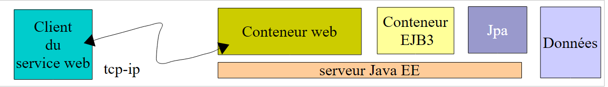 |
Para que la aplicación web creada tenga acceso a las clases asociadas a EJB y [Metier], añadimos a las bibliotecas de la aplicación web [mv-pam-ws-ejb-metier-dao-eclipselink], la dependencia del servidor EJB [mv-pam-ejb-metier-dao-eclipselink] que ya hemos visto.
 |
- en [1], añadimos un proyecto a las dependencias del proyecto web,
- en [2], se selecciona el proyecto [mv-pam-ejb-metier-dao-eclipselink],
- en [3], el tipo de la dependencia es ejb,
- en [4], el ámbito de la dependencia es provided, es decir, que será proporcionada por el entorno de ejecución,
- en [5], se ha añadido la dependencia.
Para crear el mismo servicio web que antes, necesitamos:
- crear una clase etiquetada como @Webservice
- con dos métodos, calculerFeuilleSalaire y findAllEmployes, etiquetados con @WebMethod
Creamos una clase [PamWsEjbMetier] en un paquete [pam.ws]:
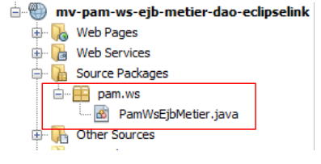 |
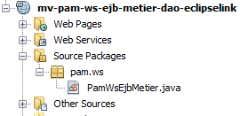 |
La clase [PamWsEjbMetier] es la siguiente:
- líneas 7-10: la clase importa clases del módulo EJB [pam-serveurws-metier-dao-jpa-eclipselink], cuyo proyecto Maven se ha añadido a las dependencias del proyecto.
- línea 12: la clase es un servicio web
- línea 13: implementa la interfaz IMetier definida en el módulo EJB
- líneas 18-19: el método calculerFeuilleSalaire se expone como método del servicio web
- líneas 23-24: el método findAllEmployes se expone como método del servicio web
- líneas 15-16: la interfaz local de EJB [Metier] se inserta en el campo de la línea 16. Utilizamos la interfaz local porque la aplicación web y el módulo EJB se ejecutan en el mismo JVM.
- Líneas 20 y 25: los métodos calculerFeuilleSalaire y findAllEmployes delegan su procesamiento a los métodos del mismo nombre de EJB [Metier]. Por lo tanto, la clase solo sirve para exponer a los clientes remotos los métodos de EJB y [Metier] como métodos de un servicio web.
En NetBeans, la aplicación web se reconoce como una que expone un servicio web:
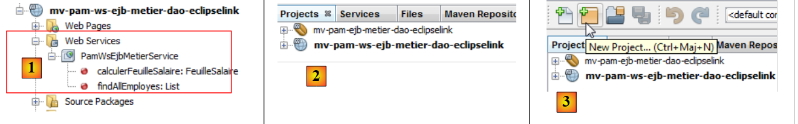 |
Para implementar el servicio web en el servidor GlassFish, debemos implementar tanto:
- el módulo web en el contenedor web del servidor
- el módulo EJB en el contenedor EJB del servidor
Para ello, debemos crear una aplicación de tipo [Enterprise Application] que implemente ambos módulos al mismo tiempo. Para ello, es necesario que ambos proyectos estén cargados en NetBeans [2].
Una vez hecho esto, creamos un nuevo proyecto [3].
 |
- En [4], elegimos un proyecto de tipo [Enterprise Application].
- En [5], le damos un nombre al proyecto
 |
- En [6], configuramos el proyecto. La versión de Java EE será Java EE 6. Se puede crear un proyecto empresarial con dos módulos: un módulo EJB y un módulo web. En este caso, el proyecto empresarial encapsulará el módulo web y el módulo EJB, ya creados y cargados en NetBeans. Por lo tanto, no solicitamos la creación de nuevos módulos.
- En [7], el proyecto empresarial [mv-pam-webapp-ear] así creado. Al mismo tiempo se ha creado otro proyecto Maven: [mv-pam-webapp]. No nos ocuparemos de él.
- En [8], añadimos dependencias al proyecto empresarial
 |
- En [9], añadimos el proyecto web de tipo WAR,
- en [10], añadimos el proyecto EJB de tipo EJB,
 |
- en [11], el proyecto empresarial con sus dos dependencias.
Compilamos el proyecto empresarial mediante un «Clean and Build». Ya estamos casi listos para implementarlo en el servidor GlassFish. Antes de ello, puede ser necesario descargar las aplicaciones ya cargadas en el servidor para evitar posibles conflictos de nombres entre EJB y [11]:
 |
El servidor MySQL debe estar en ejecución y la base de datos [dbpam_eclipselink] debe estar disponible y completa. Una vez hecho esto, se puede implementar la aplicación empresarial [12]. En [13], se puede comprobar que se ha implementado correctamente en el servidor Glassfish.
Podemos probar el servicio web que se acaba de implementar:
 |
- en [1], solicitamos probar el servicio web [PamWsEjbMetier]
- en [2], la página de prueba. Dejamos que sea el lector quien realice las pruebas.
8.2.2. La parte del cliente
Tarea a realizar: siguiendo el procedimiento descrito en el apartado 8.1.2.1, crear un cliente de consola para el servicio web anterior.
8.3. Servicio web implementado con Spring y Tomcat
Nos situamos ahora en el marco de la siguiente arquitectura:
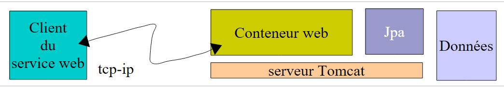 |
El servicio web lo proporciona una aplicación web que se ejecuta en el contenedor web del servidor Tomcat. La arquitectura de la aplicación será la siguiente:
 |
Nos basaremos en el proyecto [mv-pam-spring-hibernate] creado en el apartado 5.11:
 |
8.3.1. La parte del servidor
Creamos una aplicación web de Maven denominada [mv-pam-ws-spring-tomcat] [1]:
 |
Modificamos el archivo [pom.xml] para incluir las siguientes dependencias [2]:
<dependencies>
<dependency>
<groupId>${project.groupId}</groupId>
<artifactId>mv-pam-spring-hibernate</artifactId>
<version>${project.version}</version>
</dependency>
<!-- Dependencias de Apache CXF -->
<dependency>
<groupId>org.apache.cxf</groupId>
<artifactId>cxf-rt-frontend-jaxws</artifactId>
<version>2.2.12</version>
</dependency>
<dependency>
<groupId>org.apache.cxf</groupId>
<artifactId>cxf-rt-transports-http</artifactId>
<version>2.2.12</version>
</dependency>
</dependencies>
- líneas 3-7: la dependencia del proyecto [spring-pam-jpa-hibernate],
- líneas 8-17: las dependencias del framework Apache CXF y [http://cxf.apache.org/]. Este framework facilita la creación de servicios web.
Este archivo [pom.xml] conlleva numerosas dependencias [2].
Volvamos a la arquitectura de la aplicación:
 |
Las llamadas al servicio web que vamos a crear se gestionan mediante un servlet del marco CXF. Esto se refleja en el archivo [WEB-INF / web.xml] de la siguiente manera:
<?xml version="1.0" encoding="UTF-8"?>
<web-app version="2.5" xmlns="http://java.sun.com/xml/ns/javaee" xmlns:xsi="http://www.w3.org/2001/XMLSchema-instance" xsi:schemaLocation="http://java.sun.com/xml/ns/javaee http://java.sun.com/xml/ns/javaee/web-app_2_5.xsd">
<display-name>mv-pam-ws-spring-tomcat</display-name>
<listener>
<listener-class>org.springframework.web.context.ContextLoaderListener</listener-class>
</listener>
<!-- Configuración de CXF -->
<servlet>
<servlet-name>CXFServlet</servlet-name>
<servlet-class>org.apache.cxf.transport.servlet.CXFServlet</servlet-class>
<load-on-startup>1</load-on-startup>
</servlet>
<servlet-mapping>
<servlet-name>CXFServlet</servlet-name>
<url-pattern>/ws/*</url-pattern>
</servlet-mapping>
<session-config>
<session-timeout>
30
</session-timeout>
</session-config>
<welcome-file-list>
<welcome-file>index.jsp</welcome-file>
</welcome-file-list>
</web-app>
- El marco CXF depende de Spring. Líneas 4-6: se declara un listener. La clase correspondiente se cargará al mismo tiempo que la aplicación web. Utilizará el archivo de configuración de Spring [WEB-INF / applicationContext.xml]:
 |
- líneas 8-12: el servlet CXF, que gestionará las llamadas al servicio web que vamos a crear,
- líneas 13-16: las URL procesadas por el servlet CXF serán del tipo /ws/*. Las demás no serán procesadas por CXF.
Para definir el servicio web, definimos una interfaz y su implementación:
 |
La interfaz [IWsMetier] será la siguiente:
package pam.ws;
import javax.jws.WebService;
import metier.IMetier;
@WebService
public interface IWsMetier extends IMetier{
}
- línea 7: la interfaz [IWsMetier] deriva de la interfaz [IMetier] de la capa [métier] del proyecto [mv-pam-spring-hibernate],
- línea 6: la interfaz [IWsMetier] es la de un servicio web.
La clase de implementación de esta interfaz es la siguiente:
package pam.ws;
import java.util.List;
import javax.jws.WebMethod;
import javax.jws.WebService;
import jpa.Employe;
import metier.FeuilleSalaire;
import metier.IMetier;
@WebService
public class PamWsMetier implements IWsMetier {
// capa de negocio
private IMetier metier;
// constructor
public PamWsMetier(){
}
@WebMethod
public FeuilleSalaire calculerFeuilleSalaire(String SS, double nbHeuresTravaillees, int nbJoursTravailles) {
return metier.calculerFeuilleSalaire(SS, nbHeuresTravaillees, nbJoursTravailles);
}
@WebMethod
public List<Employe> findAllEmployes() {
return metier.findAllEmployes();
}
// getters y setters
public void setMetier(IMetier metier) {
this.metier = metier;
}
}
- línea 11: la clase [PamWsMetier] implementa la interfaz definida anteriormente,
- línea 10: define la clase como un servicio web,
- línea 14: Spring inyectará la capa [métier],
- líneas 21 y 26: la anotación @WebMethod convierte un método en un método expuesto por el servicio web,
- líneas 23 y 28: los métodos se implementan mediante la capa [métier].
Ahora solo nos queda definir el contenido del archivo de configuración de Spring [applicationContext.xml]:
 |
Su contenido es el siguiente:
<?xml version="1.0" encoding="UTF-8"?>
<beans xmlns="http://www.springframework.org/schema/beans" xmlns:xsi="http://www.w3.org/2001/XMLSchema-instance"
xmlns:tx="http://www.springframework.org/schema/tx"
xmlns:jaxws="http://cxf.apache.org/jaxws"
xsi:schemaLocation="http://www.springframework.org/schema/beans
http://www.springframework.org/schema/beans/spring-beans-2.0.xsd
http://www.springframework.org/schema/tx
http://www.springframework.org/schema/tx/spring-tx-2.0.xsd
http://cxf.apache.org/jaxws
http://cxf.apache.org/schemas/jaxws.xsd">
<!-- Apache CXF -->
<import resource="classpath:META-INF/cxf/cxf.xml" />
<import resource="classpath:META-INF/cxf/cxf-extension-soap.xml" />
<import resource="classpath:META-INF/cxf/cxf-servlet.xml" />
<!-- capas inferiores -->
<import resource="classpath:spring-config-metier-dao.xml" />
<!-- servicio web -->
<bean id="wsMetier" class="pam.ws.PamWsMetier">
<property name="metier" ref="metier"/>
</bean>
<jaxws:endpoint id="wsmetier"
implementor="#wsMetier"
address="/metier">
</jaxws:endpoint>
</beans>
- líneas 13-15: se importan los archivos de configuración de Apache CXF. Estos se buscan en el Classpath del proyecto (atributo classpath:),
- líneas 4, 9 y 10: se declaran los espacios de nombres específicos de Apache CXF,
- línea 18: se importa el archivo de configuración de Spring del proyecto [mv-pam-spring-hibernate],
- líneas 21-23: definen el bean del servicio web con su dependencia de la capa [métier] (línea 22),
- líneas 24-27: definen el propio servicio web,
- línea 25: el bean de Spring que implementa el servicio web es el definido en la línea 21;
- línea 26: define la ruta URL en la que estará disponible el servicio web, en este caso /metier. Si se combina con el formato que deben tener las URL procesadas por Apache CXF (véase el archivo web.xml), esta URL pasa a ser /ws/metier.
Nuestro proyecto está listo para ejecutarse. Lo ejecutamos (Run) y solicitamos el URL [http://localhost:8080/mv-pam-ws-spring-tomcat/ws] en un navegador:

La página muestra una lista de todos los servicios web desplegados. En este caso, solo hay uno. Seguimos el enlace WSDL:
 |
El texto que se muestra, [1], corresponde a un archivo XML que define las funcionalidades del servicio web, cómo invocarlo y qué respuestas envía. Cabe destacar el URL [2] de este archivo WSDL. Todos los clientes del servicio web necesitan conocerlo.
8.3.2. La parte del cliente
Tarea a realizar: siguiendo el procedimiento descrito en el apartado 8.1.2.1, crear un cliente de consola para el servicio web anterior.
Nota: para indicar el URL del archivo WSDL del servicio web, se procederá de la siguiente manera:
 |
Se asignará a [3] el URL anotado anteriormente en [2].